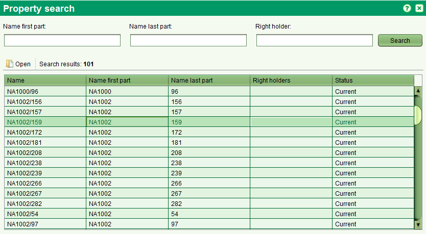

The Property Search screen allows you to find properties of interest for editing or viewing.
It can be accessed from the Search > Search Property menu or selecting 

You can search by any combination of name first party, name last party, right holder.
These fields also support partial and full matching.
You can also access in read only mode the property details screen by selecting
one property in the list and the pressing

Also See